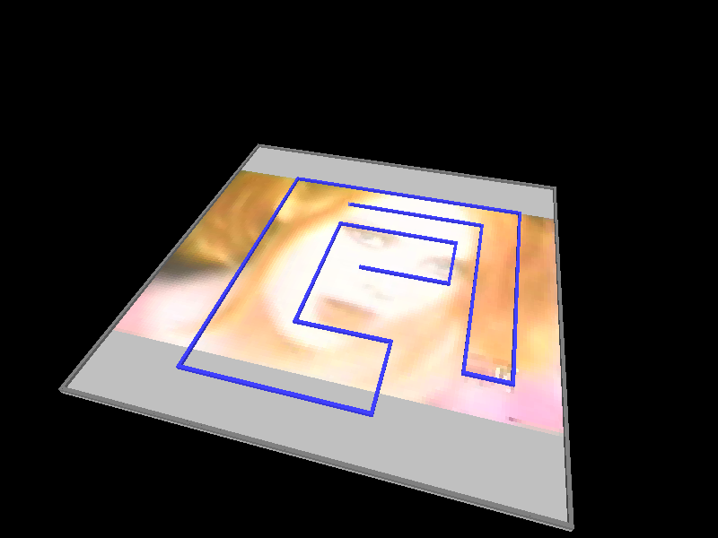
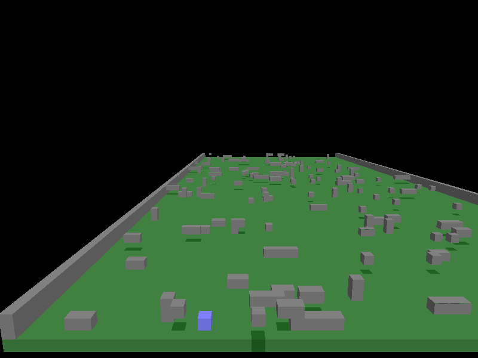
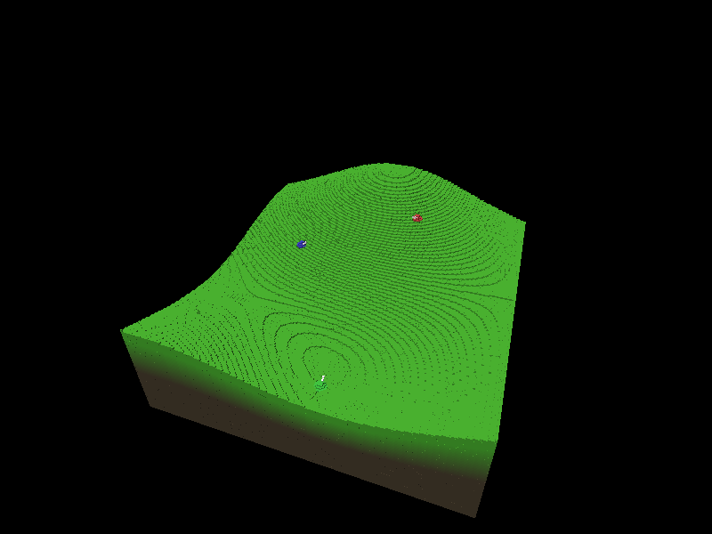
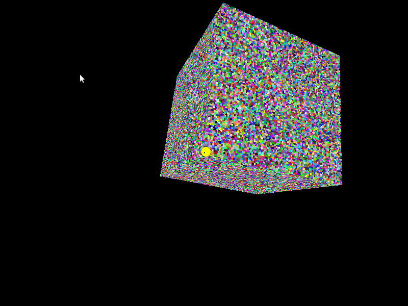

Voxel Engine
Description
I made an engine that render voxels (i.e. 3 dimentional frame buffer). This is not to be confused with projects that use cubes as 3D primitives and still support transformations.
Implementation Details
- OpenGL-based.
- One RGBA 3D Texture stores the voxels.
- Fixed amount of 2D geometry quads sheet render the slices of the voxel scene.
- Pixel Buffer Objects (PBO) for fast transfer of texture data.
The result unfortunatly shows a lot of aliasing at voxel boundaries from certain angles.
Screenshots



